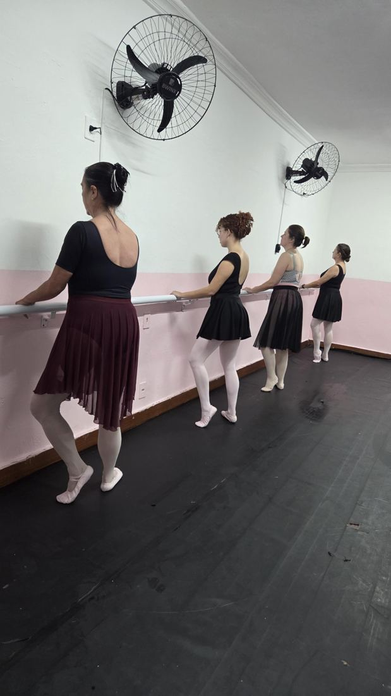
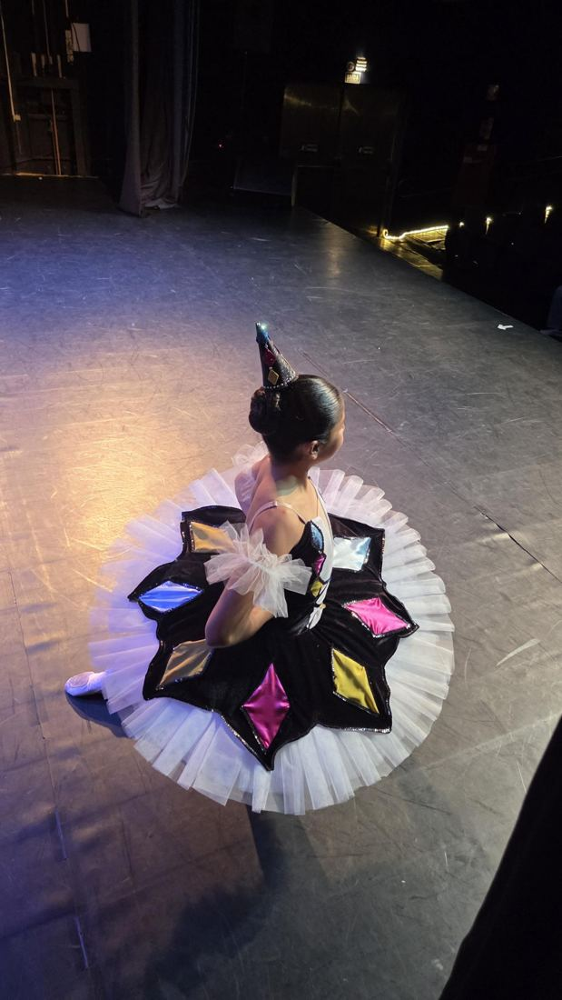

Blog
Reflexões sobre ensinar e dançar

Ballet adulto
Começar adulta não significa chegar atrasada
Muitas mulheres chegam ao ballet achando que perderam o tempo certo. Não perderam. O corpo adulto aprende, e aprende com uma consciência que a criança ainda não tem.

Ballet infantil
A criança vive a história. A professora compreende o objetivo.
No ballet infantil, a brincadeira não é o contrário da técnica. É o caminho até ela. O segredo está em a professora saber exatamente o que cada história está ensinando.